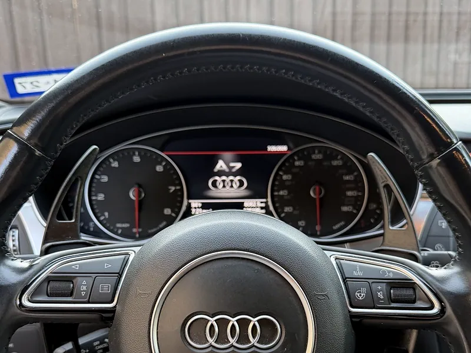
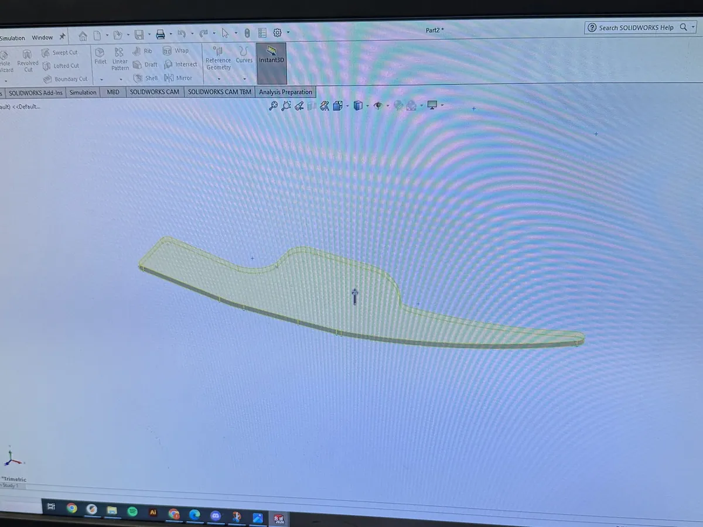
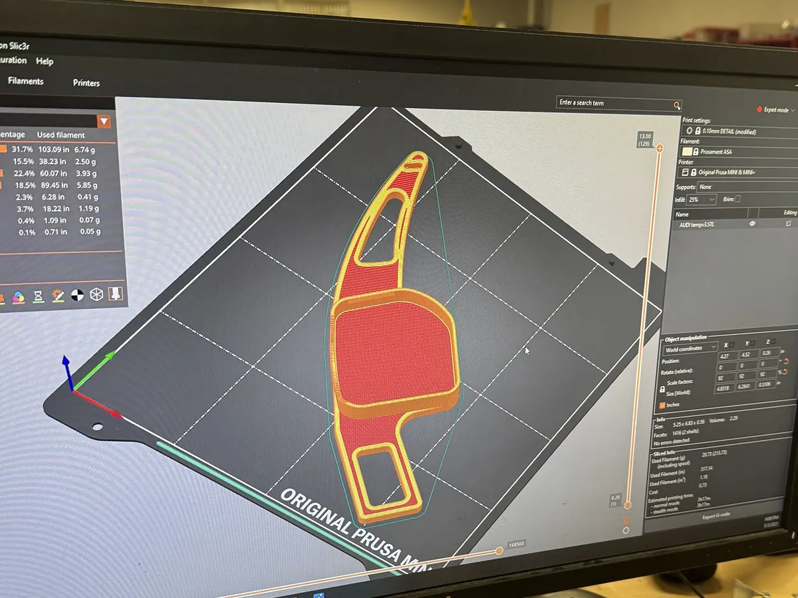
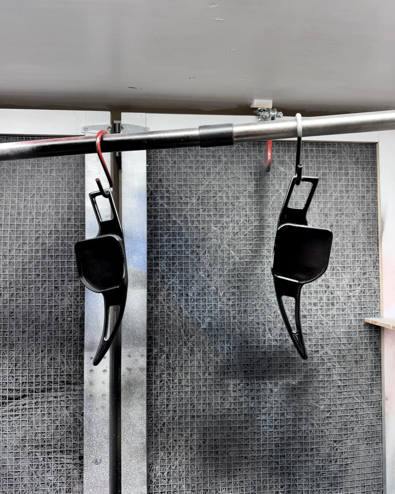
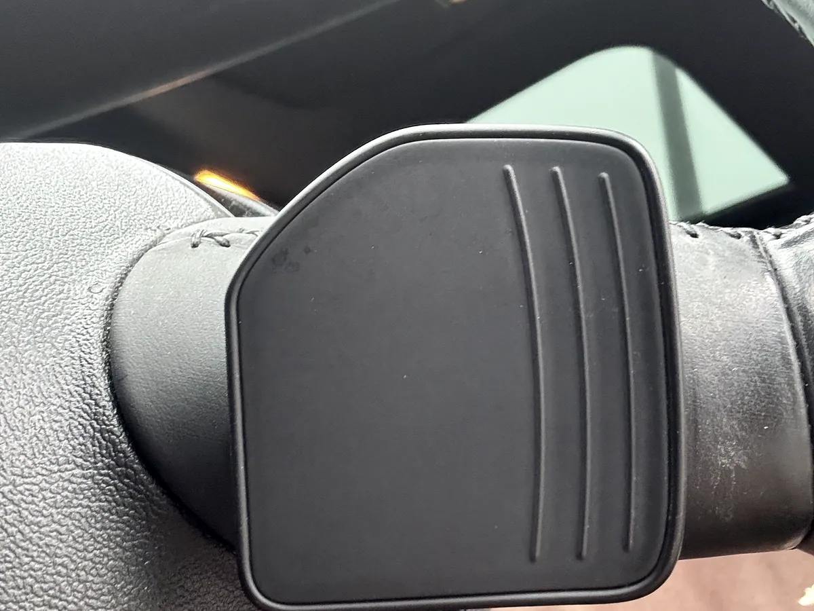
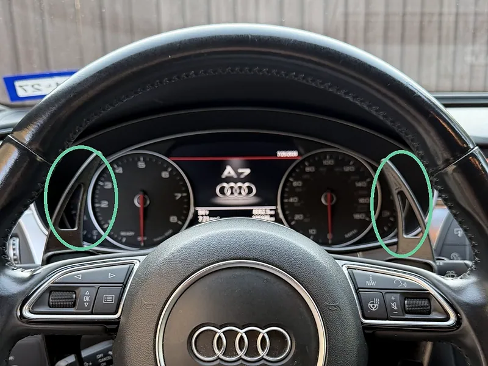

3D Printed Paddle Shifters
Reverse engineered extended paddles with no OEM reference. Six revisions, tolerance coupons before committing material, finished to pass as factory trim.

No drawing, no scan, no reference. Just a shape you can only reach by hand.
The factory paddles on the A7 are short. Reaching one mid-corner means taking a hand off the wheel, which is exactly when you want both of them on it. Longer paddles are a known aftermarket part for a lot of cars. Not for this one.
There was no OEM model, no scan and nothing to copy. The mounting interface is a shape behind the wheel that you can only characterise by measuring the part in your hand. So the project was really two projects: get the interface right, then make the paddle look like it came with the car.
I modelled the mounting interface first and the paddle shape second. Get that order backwards and every revision of the pretty part is wasted.

Coupons before commitment.



The expensive mistake in a project like this is printing a whole part to find out the clip is half a millimetre off. A full paddle is hours. A coupon of just the clip geometry is minutes. I printed the interface on its own and test fitted it until it gripped the factory mount properly, and only then committed material to a full part.
Print orientation was the other decision that mattered. A paddle is a cantilever that gets pulled at the tip, so the bending stress runs along its length. Layer adhesion is the weakest direction in an FDM part, and stacking layers parallel to that stress is how you get a paddle that snaps off in your hand. Orienting so the layers run across the load path costs you print time and support material, and buys you a part that does not delaminate.


It fits, it holds, and it does not look printed.
Six revisions, five test prints, and about three hours of print time on the parts that made it to the car. Both paddles fitted, sanded through grits and clear coated so they read as factory interior trim instead of a 3D print.
On heat: PLA starts softening somewhere around 140°F, and a car parked in 105°F Texas sun runs past 130°F inside. That is closer than I would like. The parts are in the cabin rather than on glass, they are shaded, and they are not under sustained load, and they have held their shape and their fit.
In hindsight: PLA was the wrong material even though it worked. PETG or ASA would have removed the heat question completely for a couple of dollars more. I used PLA because it was already on the printer, which is not an engineering reason.